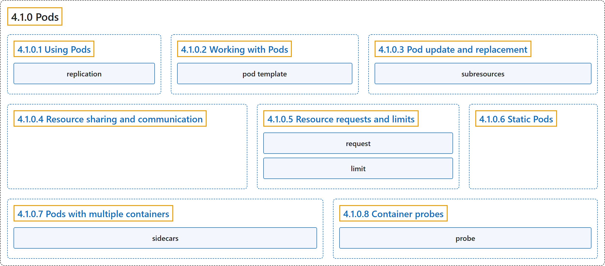

4.1.0 Pods
Classification

Glossary
| Term | Definition | 中文翻译 | Source |
|---|---|---|---|
| 4.1.0 Pods Pod |
"Pods are the smallest deployable units of computing that you can create and manage in Kubernetes." "A Pod (as in a pod of whales or pea pod) is a group of one or more containers, with shared storage and network resources, and a specification for how to run the containers." | Pod 是最小的可部署计算单元，你可以在 Kubernetes 中创建和管理它。Pod（就像一群鲸鱼或一个豌豆荚）是一组一个或多个容器，共享存储和网络资源，并带有如何运行这些容器的规约。 | The Kubernetes Authors, n.d., "Pods", para. 1 and 2 |
| 4.1.0.1 Using Pods 使用 Pod |
(No definition) | （无定义） | The Kubernetes Authors, n.d., "Using Pods" |
| replication 复制 |
(context) "In Kubernetes, this is typically referred to as replication." | （语境）在 Kubernetes 中，这通常称为复制。 | The Kubernetes Authors, n.d., "Workload resources for managing pods", para. 2 |
| 4.1.0.2 Working with Pods 操作 Pod |
(No definition) | （无定义） | The Kubernetes Authors, n.d., "Working with Pods" |
| pod template Pod 模板 |
(context) "Controllers for workload resources create Pods from a pod template and manage those Pods on your behalf." | （语境）工作负载资源的控制器根据 Pod 模板创建 Pod，并代你管理这些 Pod。 | The Kubernetes Authors, n.d., "Pod templates", para. 1 |
| 4.1.0.3 Pod update and replacement Pod 的更新与替换 |
(No definition) | （无定义） | The Kubernetes Authors, n.d., "Pod update and replacement" |
| subresources 子资源 |
(context) "The above update rules apply to regular pod updates, but other pod fields can be updated through subresources." | （语境）上述更新规则适用于常规的 Pod 更新，但其他 Pod 字段可以通过子资源更新。 | The Kubernetes Authors, n.d., "Pod subresources", para. 1 |
| 4.1.0.4 Resource sharing and communication 资源共享与通信 |
"Pods enable data sharing and communication among their constituent containers." | Pod 能让其中的各容器之间共享数据和通信。 | The Kubernetes Authors, n.d., "Resource sharing and communication", para. 1 |
| 4.1.0.5 Resource requests and limits 资源请求与限制 |
(No definition) | （无定义） | The Kubernetes Authors, n.d., "Resource requests and limits" |
| request 请求 |
(context) "When you specify the resource request for containers in a Pod, the kube-scheduler uses this information to decide which node to place the Pod on." | （语境）当你为 Pod 中的容器指定资源请求时，kube-scheduler 用这一信息来决定把 Pod 放到哪个节点上。 | The Kubernetes Authors, n.d., "Resource requests and limits", para. 2 |
| limit 限制 |
(context) "When you specify a resource limit for a container, the kubelet enforces those limits so that the running container is not allowed to use more of that resource than the limit you set." | （语境）当你为容器指定资源限制时，kubelet 会强制执行这些限制，使运行中的容器不能使用超过所设上限的资源。 | The Kubernetes Authors, n.d., "Resource requests and limits", para. 2 |
| 4.1.0.6 Static Pods 静态 Pod |
"Static Pods are managed directly by the kubelet daemon on a specific node, without the API server observing them." | 静态 Pod 由特定节点上的 kubelet 守护进程直接管理，API 服务器不会观察它们。 | The Kubernetes Authors, n.d., "Static Pods", para. 1 |
| 4.1.0.7 Pods with multiple containers 多容器 Pod |
"Pods are designed to support multiple cooperating processes (as containers) that form a cohesive unit of service." | Pod 的设计支持多个相互协作的进程（以容器形式），它们组成一个内聚的服务单元。 | The Kubernetes Authors, n.d., "Pods with multiple containers", para. 1 |
| sidecars 边车 |
(context) "Setting the Always restart policy ensures that the containers where you set it are treated as sidecars that are kept running during the entire lifetime of the Pod." |
（语境）设置 Always 重启策略，可确保设置了它的容器被视为边车，在 Pod 的整个生命周期内保持运行。 |
The Kubernetes Authors, n.d., "Pods with multiple containers", para. 9 |
| 4.1.0.8 Container probes 容器探针 |
(No definition) | （无定义） | The Kubernetes Authors, n.d., "Container probes" |
| probe 探针 |
"A probe is a diagnostic performed periodically by the kubelet on a container." | 探针是一种诊断，由 kubelet 定期对容器执行。 | The Kubernetes Authors, n.d., "Container probes", para. 1 |
References
The Kubernetes Authors. (n.d.). Pods. Kubernetes Documentation. Retrieved October 31, 2026, from https://kubernetes.io/docs/concepts/workloads/pods/